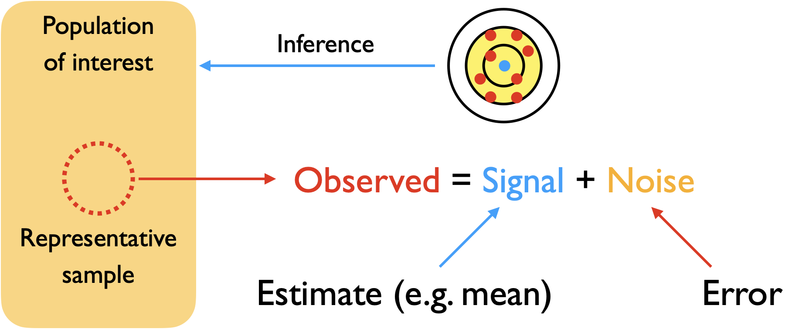
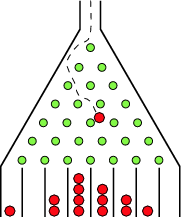

Inferential Statistics#
In descriptive statistics, we are able to summarize the characteristics of the data at hand. Often times, we are interested in generalizing the observations of the data we have to a larger population. In other words, we would like to infer the characteristics of a larger population from the sample that we have.

How are we able to achieve this?
The sample contains the signal (e.g the estimate of the mean of the population) with noise that comes from uncertainty about the measurements
Understanding the characteristics of the error/uncertainty will allow us to infer the estimates for the population from the sample
Modeling uncertainty#
What are the characteristics of the uncertainty? We can model it by looking at the accumulation of independent random deviations from an initial value.
{kind=link}
Let us model this as a random walk
We will start with a value that represents the true measurement (0)
We then simulate the the errors that can change the value as a random choice that either increases (+1) or decreases (-1) at each step
We will examine the final value resulting from the cumulative deviations at the end of a defined number of steps
Here, we start out with a base function walk that simulates the random choice of (+1) or (-1) at each step, then calculates the cumulative errors at the end of the defined number of steps
walk(steps = number of steps,
prob = probability (default is 50:50)
Show code cell source
library(tidyverse)
walk <- function(steps, prob = c(0.5,0.5)) {
tibble(step=1:steps,
direction=sample(c(-1,1), # we use the sample function with 2 choices (-1 and +1)
steps, # steps = how many repetitions
replace = TRUE,
prob = prob)) %>% # prob = the probability between the choices (here it is 50:50)
mutate(cumsum = cumsum(direction)) %>% # cumsum is function that cumulatively adds up the values at each step
select(step, direction, cumsum) %>%
return
}
── Attaching core tidyverse packages ───────────────────────────── tidyverse 2.0.0 ──
✔ dplyr 1.1.1 ✔ readr 2.1.4
✔ forcats 1.0.0 ✔ stringr 1.5.0
✔ ggplot2 3.4.2 ✔ tibble 3.2.1
✔ lubridate 1.9.2 ✔ tidyr 1.3.0
✔ purrr 1.0.1
── Conflicts ─────────────────────────────────────────────── tidyverse_conflicts() ──
✖ dplyr::filter() masks stats::filter()
✖ dplyr::lag() masks stats::lag()
ℹ Use the conflicted package (<http://conflicted.r-lib.org/>) to force all conflicts to become errors
We can take a look at a simulation of 100 steps with random deviation (+1 or -1) at each step
# walk 100 steps, 50/50 probability
walk_100 <- walk(100)
head(walk_100)
tail(walk_100)
| step | direction | cumsum |
|---|---|---|
| <int> | <dbl> | <dbl> |
| 1 | 1 | 1 |
| 2 | -1 | 0 |
| 3 | -1 | -1 |
| 4 | -1 | -2 |
| 5 | 1 | -1 |
| 6 | -1 | -2 |
| step | direction | cumsum |
|---|---|---|
| <int> | <dbl> | <dbl> |
| 95 | -1 | 5 |
| 96 | -1 | 4 |
| 97 | 1 | 5 |
| 98 | 1 | 6 |
| 99 | -1 | 5 |
| 100 | 1 | 6 |
We can visualize the path of the random walk after 100 steps
Show code cell source
# set plot dimensions
options(repr.plot.width=8, repr.plot.height=8)
walk_100 %>%
ggplot(aes(x=cumsum,y=step)) +
geom_path() +
scale_y_reverse() + # so that y-axis goes from top to bottom
theme_gray(base_size=16)
Now, let’s create a function called repeat_walk that can generate multiple runs of the random walk. We will specify that the probability of going left or right is 50/50.
repeat_walk(num_replicates = number of replicates
num_steps = number of steps per replicate
prob = probability (default is 50:50))
Show code cell source
repeat_walk <- function(num_replicates, num_steps, prob=c(0.5,0.5)) {
replicate(num_replicates,
walk(num_steps, prob),
simplify = FALSE) %>%
bind_rows %>%
mutate(replicate=rep(1:num_replicates, each=num_steps)) %>%
return
}
We can generate a dataset of 1000 replicates of the random walk of 100 steps each
multi_walk <- repeat_walk(num_replicates = 1000,
num_steps = 100)
head(multi_walk)
tail(multi_walk)
| step | direction | cumsum | replicate |
|---|---|---|---|
| <int> | <dbl> | <dbl> | <int> |
| 1 | 1 | 1 | 1 |
| 2 | 1 | 2 | 1 |
| 3 | -1 | 1 | 1 |
| 4 | -1 | 0 | 1 |
| 5 | 1 | 1 | 1 |
| 6 | -1 | 0 | 1 |
| step | direction | cumsum | replicate |
|---|---|---|---|
| <int> | <dbl> | <dbl> | <int> |
| 95 | -1 | -17 | 1000 |
| 96 | -1 | -18 | 1000 |
| 97 | 1 | -17 | 1000 |
| 98 | -1 | -18 | 1000 |
| 99 | -1 | -19 | 1000 |
| 100 | -1 | -20 | 1000 |
Now, let us look at the paths of the multiple random walks
Show code cell source
# set plot dimensions
options(repr.plot.width=8, repr.plot.height=8)
# plot multiple paths of each random walk
multi_walk %>%
group_by(replicate) %>% # we specify group_by to plot each path by its replicate number
ggplot(aes(x=cumsum, y=step)) +
geom_path(aes(group=replicate),alpha=0.01) + # the group mapping will plot each path by the replicate number
scale_y_reverse() +
theme_grey(base_size=16)
We can plot the distribution of cumulative values at the end of the multiple sets of random walks. This represents the spread of uncertainty around the original value as a result of the accumulation of random deviations
Show code cell source
# set plot dimensions
options(repr.plot.width=8, repr.plot.height=8)
# plot histogram of cumulative values at the end of the random walks
multi_walk %>%
filter(step==max(step)) %>% # take only the last step
ggplot(aes(x=cumsum)) + # plot the cumulative values at the last step
geom_bar() +
theme_grey(base_size=16)
Notice that the distribution looks like the familiar bell-shaped curve, which results from the sum of random deviations from an initial value
We can also use a built-in function rbinom to calculate the values from this process by sampling from a binomial distribution (similar to our repeat_walk function)
rbinom(number of replicates,
number of steps per replicate,
probability of success)
Show code cell source
# set plot dimensions
options(repr.plot.width=8, repr.plot.height=8)
# plot the binomial distribution
tibble(freq=rbinom(1000,200,0.5)-100) %>% # we subtract 100 from the values to center
ggplot(aes(x=freq)) +
geom_bar() +
theme_grey(base_size=16)
Playing with an interactive version#
https://iwant2study.org/lookangejss/math/ejss_model_GaltonBoardwee/GaltonBoardwee_Simulation.xhtml
What happens when we increase the number of samples?#
We note that the shape of the distribution looks like a normal distribution and we can examine how the shape changes as we increase the number of samples
We will generate different sized samples (1000,10000,100000) from a binomial distribution (similar to cumulative random deviations in a random walk) and plot them
Show code cell source
sample_1 <- tibble(sample=1000, freq=rbinom(1000,200,0.5)-100)
sample_2 <- tibble(sample=10000, freq=rbinom(10000,200,0.5)-100)
sample_3 <- tibble(sample=100000, freq=rbinom(100000,200,0.5)-100)
samples <- bind_rows(sample_1,sample_2,sample_3) # we combine them in 1 tibble
head(samples)
tail(samples)
| sample | freq |
|---|---|
| <dbl> | <dbl> |
| 1000 | -15 |
| 1000 | -1 |
| 1000 | -8 |
| 1000 | -8 |
| 1000 | -8 |
| 1000 | 4 |
| sample | freq |
|---|---|
| <dbl> | <dbl> |
| 1e+05 | -1 |
| 1e+05 | 6 |
| 1e+05 | 5 |
| 1e+05 | 9 |
| 1e+05 | 1 |
| 1e+05 | 10 |
Show code cell source
# set plot dimensions
options(repr.plot.width=10, repr.plot.height=15)
# plot histograms of distributions grouped by sample size
samples %>%
group_by(sample) %>%
ggplot(aes(x=freq)) +
geom_bar() +
facet_grid(sample ~ ., scales="free_y") + # free_y = allow each graph to have their own scale
theme_grey(base_size=16)
As you can see, as the number of samples (observations) increases, the shape of the plot becomes more bell-shaped
Asymptotically, as \(n \rightarrow \infty\) the distribution becomes Gaussian/normal (for the curious: http://www.m-hikari.com/imf/imf-2017/9-12-2017/p/baguiIMF9-12-2017.pdf)
This error distribution is the basis of many statistical inference methods